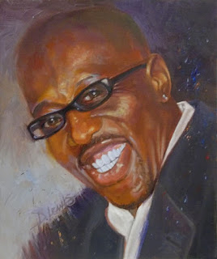
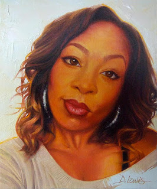
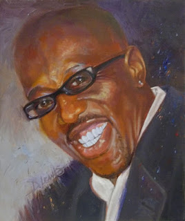
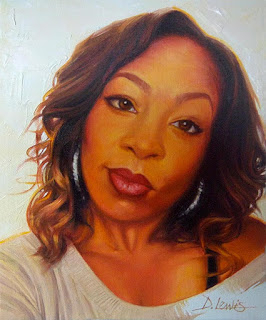

Dennis Lewis

Dennis Lewis started painting at the age of seven. He was inspired to paint after his mother complemented a drawing he had made for her. Dennis works mostly in oils, creating still-life portraits of people and any objects the pleases him. aside from being an artist he also helped create some of the first video games such as The Island of Dr. Brain. in recent years Dennis had the urge to paint 100 portraits, some of which are in the slideshow below. unfortunately Dennis was diagnosed with cancer, he still paints though. Cancer won't keep him from his dreams. Dennis likes to paint stories into his art, he lets the viewer finish the story he has presented
"The simple act of sketching stimulates creative thought" -Dennis Lewis
Interview Questions
How long have you been painting?
Since 1971, so for about 46 years.
What inspired you to become an artist?
My mother inspired me to become an artist.
What is your favorite piece of art you have made?
Painting of egyptian god called “Queen”.
What is your favorite piece of art that someone else has made?
Thomas Blackshear's painting “The Witness”.
Do you have anything you would want to say to any aspiring artists?
Be determined and passionate for your dream. Hold on to it, do it to do it.
About Dennis lewis
Dennis Lewis started drawing at the age of 7, he started drawing to get away from his bad neighborhood. His parents inspired him to keep on drawing and thats when drawing became his passion. Dennis went to a prestigious art school in which one of the main asignments was to draw 300 thumbnails each and every day. His art instructor was Bill Moore, he was a tough instructor who decided if you cant pay attention in the class you dont deserve to be in it. The next day of bill moores class there were only afew students in class including Dennis lewis. Dennis lewis later started working with big people and big projects including disney and google. Some of these big projects included: the first video game, The internet, and cable television. Dennis lewis has also worked with Dr.Dre and other artists to make album covers, Dennis made the cover art for Dr.Dre's "The Chronic" album.Dennis has also made murals for the airforce in the pentagon. Dennis lewis is now dealing with cancer but that dosnt keep him from making art in fact he started painting his friends and family.
Things to remember from Dennis Lewis
questions to be ready for
Why should i hire you?
What do you know about our company?
Quotes
Work for some job, earn money, buy required tool or spend for dream. If you need it for your dream. DO IT.
You can always learn from everybody.
Sketch your ideas/visualize your idea.
The simple act of sketching stimulates creative thought.
Art has many forms take time start small.
Art has many forms take time start small. Do things in short bursts of creativity. Practice and practice no matter the composition or quality.

 


